【piko】広告なし･DM/ストーリー既読回避･写真/動画ダウンロード可能なInstagramのAndroid向けアプリ
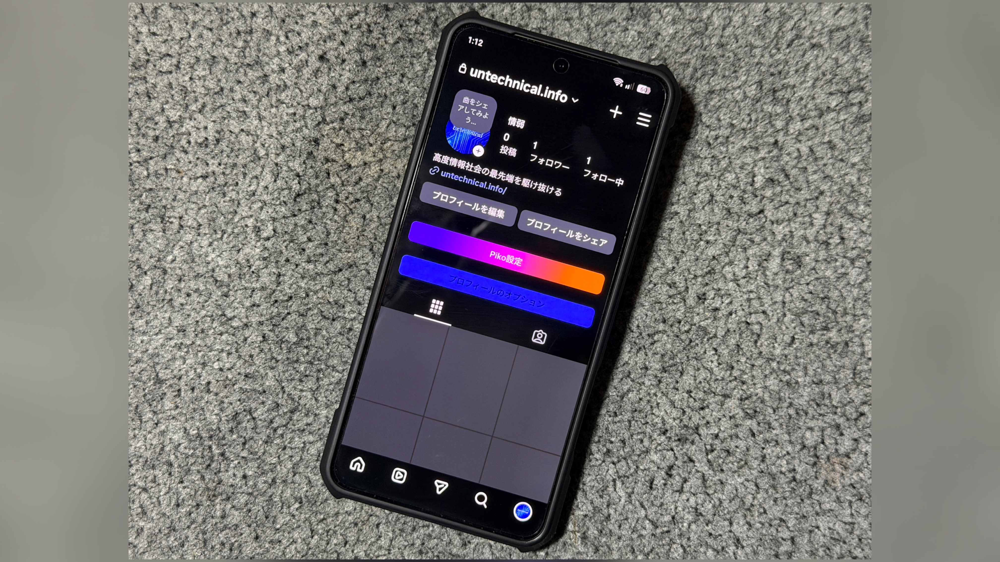
pikoとは
Google Play ストアからインストールした正規のInstagramアプリは広告が消せない。 AdGuardなどの広告ブロッカーを導入した端末のブラウザ、もしくはBraveなどの広告ブロッカー機能付きブラウザでInstagramを開けば広告は表示されなくなるが、横スライドでのタブ移動などアプリならではのスムーズな操作感を失う。 また、DMやストーリーを既読または足跡をつけずに見ることは不可能で、さらに投稿やリール、ストーリーの写真や動画は外部のアプリやサイトを使わないとダウンロードできない。 そこで、正規のInstagramアプリをベースに広告を消せるように、既読または足跡をつけずにDMやストーリーを見られるように、投稿やリールやストーリーの写真や動画をダウンロードできるようにした、pikoいうModアプリが公開されている。 ModアプリはブラウザからAPKファイルをダウンロードしてインストールできるが、正規のアプリと違い、アプリをアップデートをする際は新しいバージョンのAPKファイルをダウンロードして上書きインストールする必要がある。 ここではpikoの機能を紹介する。
目次
アプリをインストールする
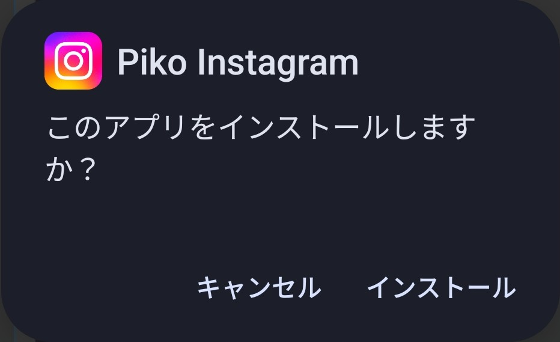
ここではpikoのインストール方法を解説する。
方法
1.OSS Tracker REをインストールする
以下のリンクからOSS Tracker REをインストールする。 このアプリがなくてもpikoはインストールできるが、アップデートのたびにpikoが配信されているWebページを開く必要がでてくる。 OSS Tracker REはModアプリを公開しているGitHubのレポジトリのURLを入力することで、Modアプリのインストールやアップデートが簡単にできるようになるアプリである。 何と言ってもアップデートがあるたびに通知を配信してくれるようになるので、毎回Webページからアプリをダウンロードするよりもはるかに便利だ。
2.OSS Tracker REを開き、右上の "+" をタップする

3. "Repository or APK URL" にpikoのGithubのリンクを入力する
pikoはMorpheというアプリで正規のXのapkに当てるパッチファイルとして配信されているため、本来はそのアプリでパッチしてからインストールということになる。 しかし、pikoがパッチ済みのInstagramのapkを配信しているGithubのレポジトリがあり、それによってOSS Trackerのアプリから直接pikoがパッチ済みのInstagramをインストール、アップデートできるようになる。 以下のリンクを入力する。
https://github.com/monsivamon/twitter-apk
4. "twitter-apk" の横に表示された "+" をタップする

5. "twitter-apk" の下の "Stable Release" の右の "∨" をタップする

6.上から2番目を選んでタップし、ダウンロードする

7. "Tap to Install: [7でダウンロードしたアプリ]" をタップし、インストールする
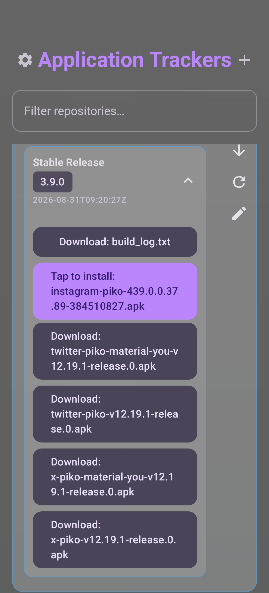
機能
 Wikipediaより引用
Wikipediaより引用
ここではpikoの主な機能を紹介する。
設定画面の場所
1.プロフィールタブの "Piko設定" をタップする
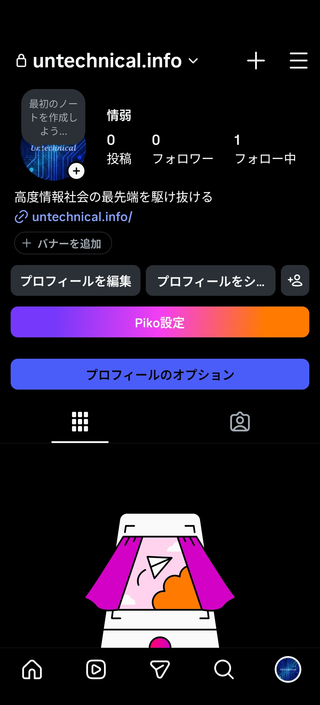
広告
･広告を無効化
フィード、ストーリー、リール、発見から広告が消える。
･｢おすすめ｣のコンテンツを非表示
おすすめのストーリー、リール、スレッドが非表示になるが、おすすめの投稿は表示される。
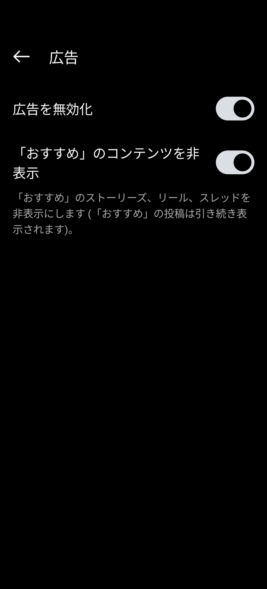
コンテンツをフィルタリング
･非表示にするストーリーの種類
･非表示にするユーザーの種類
･ストーリー内の最小件数
･ストーリー内の最大件数
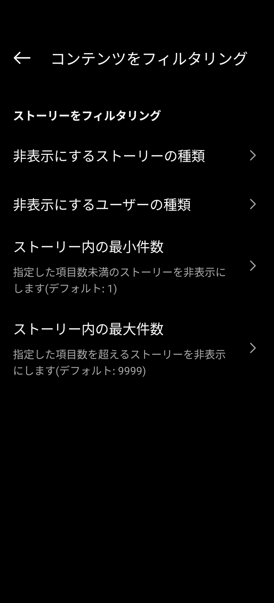
匿名
･すべての匿名モードを有効化
･ストーリーを匿名で閲覧
足跡をつけずにストーリーを閲覧できる。
･ライブを匿名で視聴
足跡(既読)をつけずにライブを閲覧できる。
･入力状態を非表示
DMで相手に "入力中..." を表示させずに自分が入力できる。
･スクリーンショットの検出を無効化
DMで消えるメッセージモードでやり取りしている際の画面、もしくは消える写真や動画のスクリーンショットを撮っても相手に通知が送信されない。
･DMを匿名で閲覧
既読をつけずにDMを閲覧できる。
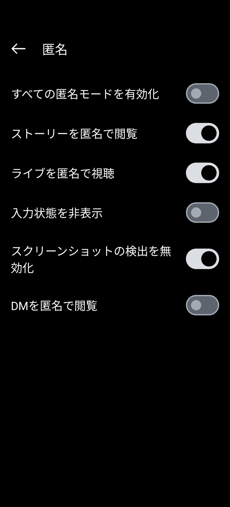
DM
･入力状態を非表示
"匿名" での設定と連動している。
･DMを匿名で閲覧
"匿名" での設定と連動している。
･一時的なメディアを永続的にする
消えるメッセージモードでのやりとり、もしくは消える写真や動画を永続的に表示できる。
･チャットを既読にするオプションを有効化
チャットを長押しした際に "既読にする" をタップして既読にできる。
･削除したメッセージを保存
相手が削除したメッセージを表示し続けることができる。
･削除したメッセージを保存
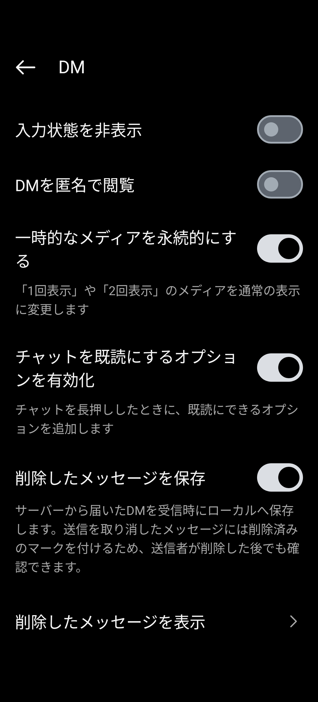
リンク
･リンクを外部ブラウザで開く
リンクをアプリ内ブラウザではなくChromeなどのブラウザアプリで開けるようになる。
･共有リンクから追跡情報を削除
リンクにアクセスした際のInstagramのトラッキングパラメーターを取り除ける。
カスタム共有ドメイン
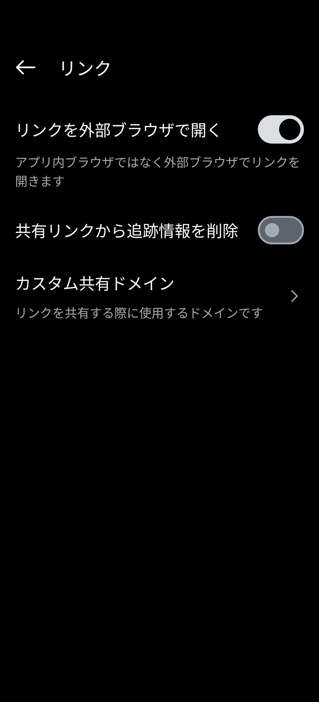
集中モード
･ストーリーズを非表示
ストーリーを閲覧できなくなる。
･ストーリーズ欄を非表示
ホームタブの上部のストーリー欄が非表示になる。
･ハイライトを非表示
ホームタブの上部のストーリー欄やプロフィールからハイライトが非表示になる。
･ノート欄を非表示
DMのノート欄が非表示になる。
･発見を無効化
発見タブで新しい投稿を閲覧できなくなる。
･コメントを非表示
･フィードにフォロー中のアカウントのみ表示
フィードにフォローしていないアカウントの投稿が表示されなくなる。
･リールのスクロールを無効化
上にスワイプして次のリールを閲覧することができなくなる。
･作成画面へのスワイプを無効化
ホームタブで右にスライドしても作成画面が表示されなくなる。
･シェアノートのグループ作成ボタンを無効化
･投稿をダブルタップして｢いいね｣を無効化
･リールをダブルタップして｢いいね｣を無効化
･コメントをダブルタップして｢いいね｣を無効化
･メッセージをダブルタップして｢いいね｣を無効化
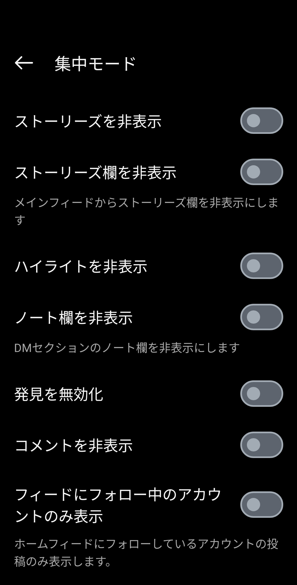
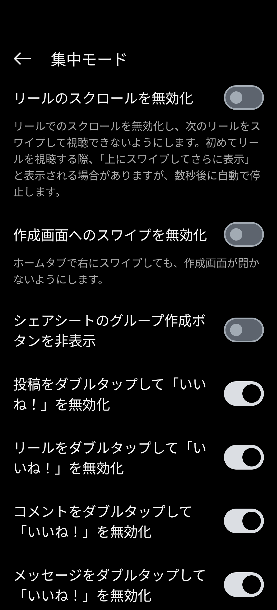
その他
･AMOLED
アプリの背景が完全な黒になる。
･Material You
アプリに端末で設定したMaterial Youデザインが適用される。
･Plus特典を有効化
Instagram Plusの特典が有効になる。
･いいね！のアニメーションを変更
･分析データの送信を無効化
･分析キャッシュを削除
･投稿の追加のオプションを有効化
おそらくこの機能は現在利用できない。
動画を自動で再生しない
フィードで動画が自動で再生されなくなる。
･ストーリーズの音声を自動で再生
おそらくこの機能は現在利用できない。
･おすすめのユーザーを無効化
プロフィールタブの "フォローする人を見つけよう" を非表示にできる。
･フレンド状態の表示を有効化
自分をフォローしているユーザーのプロフィールに "フォローされています" または "相互フォロー" 、自分をフォローしていないユーザーのプロフィールに "フォローされていません" が表示されるようになる。
･色付きの[フォロー状態の表示]を有効化
フレンド状態の表示がカラーになる。
･ストーリーのメンションを表示
ストーリーの自動切り替えを無効化
自動で次のストーリーに進まなくなる。
ストーリーをループ再生
ストーリーがループ再生されるようになる。
･ストーリーの時刻表示をカスタマイズ
･ストーリー欄のアイコンのサイズをカスタマイズ
･画像を高画質で表示
･リシェアボタンを非表示
･コメントをコピー
投稿やリールのコメントをコピーするボタンが表示されるようになる。
･GIFコメントを保存
投稿やリールのGIFコメントを保存するボタンが表示されるようになる。
･ナビゲーションバー下の空白を削除
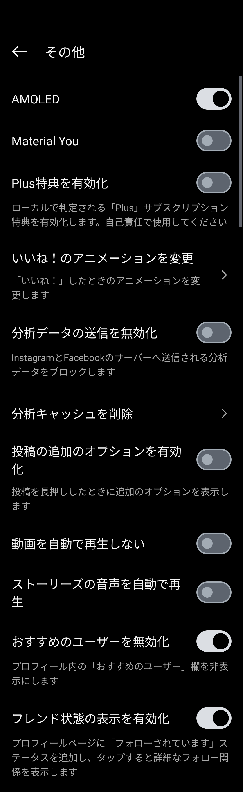
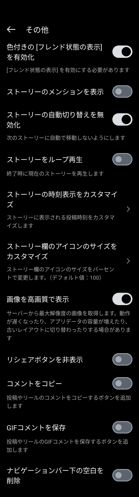
メディアのダウンロード
･ダウンロードを有効化
ストーリーや投稿の右上、リールの右下に表示されるオプションボタンをタップすると "ダウンロードのオプション" が表示されるようになり、画像や動画をオプションを選んでダウンロードできるようになる。
･直接ダウンロードを有効化
ダウンロードを有効化しているときに "ダウンロードのオプション" が "メディアのダウンロード" に変わり、今表示されている画像や動画を直接ダウンロードできるようになる。
･ユーザーネームごとにメディアを分ける
･ダウンロード先のフォルダを選択
･外部ダウンローダーでダウンロード
ストーリーや投稿の右上、リールの右下に表示されるオプションボタンをタップすると "外部ダウンローダーでダウンロード" が表示されるようになり、外部ダウンローダーのパッケージ名を指定していると画像や動画をダウンロードできるようになる。
･外部ダウンローダーのパッケージ名
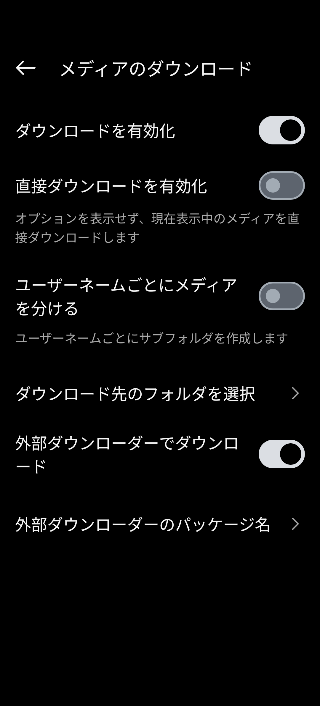
アクションバーをカスタマイズ
･[ホーム]タブに表示するアクション
ホームタブ上部に匿名モード切替ボタンとPiko設定ボタンが表示できる。
･[プロフィール]タブに表示するアクション
プロフィールタブ上部にPiko設定ボタン、プロフィール情報をコピーまたはプロフィール画像を表示･ダウンロードできるボタン、匿名モード切り替えボタンが表示できる。
･メッセージタブに表示するアクション
メッセージタブ上部に匿名モード切替ボタンとPiko設定ボタンが表示できる。
･チャットに表示するアクション
おそらくこの機能は現在利用できない。
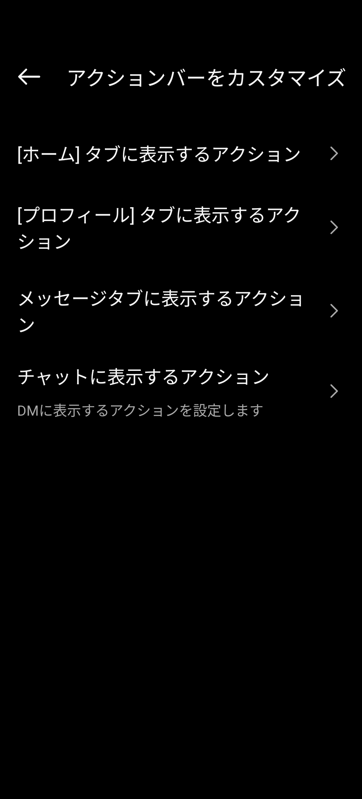
ナビゲーションボタンを非表示
･フィードボタンを非表示
ホームタブが非表示になる。
･リールボタンを非表示
リールタブが非表示になる。
･DMボタンを非表示
メッセージタブが非表示になる。
･検索ボタンを非表示
発見タブが非表示になる。
･作成ボタンを非表示
メッセージタブが非表示になる。
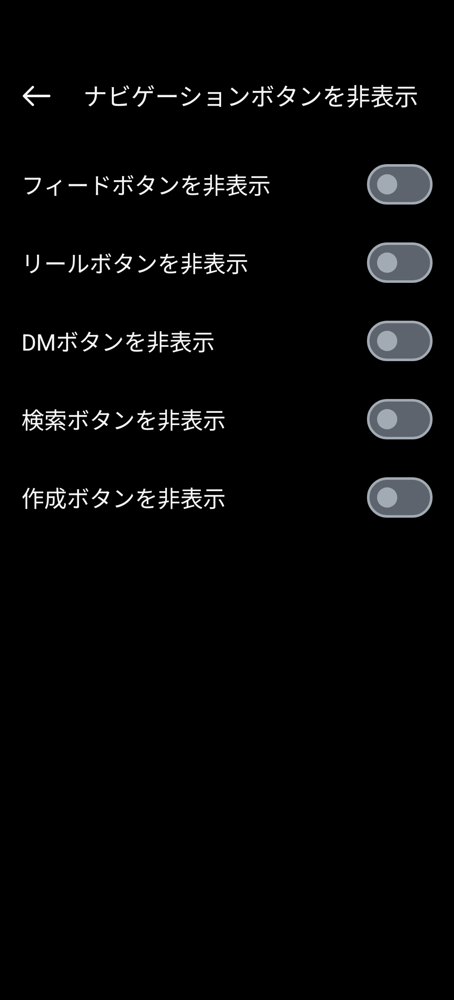
関連記事
プロフィール

高度情報社会の最先端を駆け抜ける